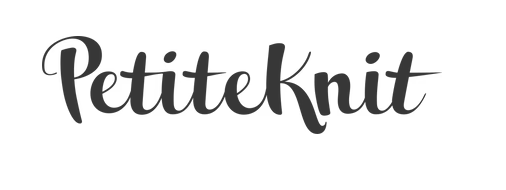
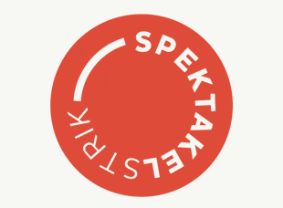
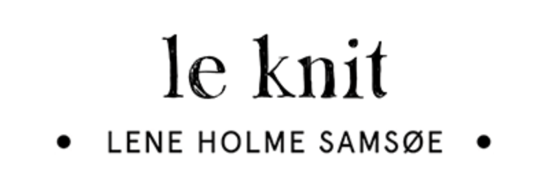

På siden finder du forslag til forskellige hjemmesider, der har nogle gode begyndervenlige projekter.
Til begyndervenlige projekter har du mulighed for, at prøve forskellige strikketeknikker af: slå op, retmasker, vrangmasker, ind- og udtagninger.
PetiteKnit er et besøg værd. På hjemmesiden finder du en side, hvor begyndervenlige projekter er samlet.
Du har mulighed for at vælge sværhedsgrad, strikkefasthed mv.
Til projekterne finder du også udførlige videoer der viser dig strikketeknikken, efterhånden som du kommer frem i opskriften. Videoerne er korte og teknikken bliver let at forstå.
Hos Spetakelstrik har du også mulighed for at vælge begyndervenlige projekter, der er nemme at strikke.
opskrifterne er nemme at forstå og du har mulighed for at finde videoer der guider dig igennem strikketeknikkerne.
Et godt bud er også Leknit.
Her finder du også en side med begyndervenlige opskrifter. Du kan vælge om du vil strikke til dig selv, børn eller måske en veninde?
Hos Leknit har du også mulighed for at finde videoer af strikketeknikkerne. Alt lige fra opslag, kanter og aflukning.
